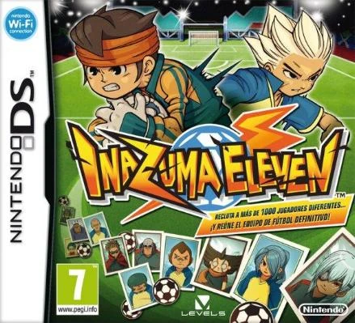
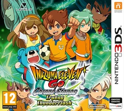

|  | Fecha de lanzamiento: 22 de agosto de 2008 Amazon Inazuma Eleven |
|
| Fecha de lanzamiento: 1 de octubre de 2009 Amazon Inazuma Eleven 2 Tormenta FuegoInazuma Eleven 2 Ventisca Eterna |
||
| Fecha de lanzamiento de Rayo Celeste y Fuego Explosivo: 1 de julio de 2010 Amazon Inazuma Eleven 3 Rayo CelesteInazuma Eleven 3 Fuego Explosivo |
||
| Fecha de lanzamiento de la amenaza del ogro: 16 de diciembre de 2010 Amazon Inazuma Eleven 3 La Amenaza Del Ogro |
||
| Fecha de Lanzamiento: 27 de diciembre de 2012 Amazon Inazuma Eleven 1-2-3 : Endou Mamoru Densetsu |
||
| Fecha de Lanzamiento: 15 de diciembre de 2011 Amazon Inazuma Eleven Go SombraInazuma Eleven Go Luz |
||
 |
Fecha de Lanzamiento: 13 de Diciembre del 2012 Amazon Inazuma Eleven Go Chrono Stones: TruenoInazuma Eleven Go Chrono Stones: Llamarada |
|
| Fecha de Lanzamiento: 5 de diciembre de 2013 Amazon Inazuma Eleven Go Galaxy SupernovaInazuma Eleven Go Galaxy the Big Bang |
||
| Fecha de Lanzamiento: 16 de Julio 2011 Amazon Inazuma Eleven Strikers |
||
| Fecha de Lanzamiento: 22 de diciembre de 2011 Amazon Inazuma Eleven Strikers 2012 Xtreme |
||
| Fecha de Lanzamiento: 20 de Diciembre de 2012 Amazon Inazuma Eleven Go : Strikers 2013 |